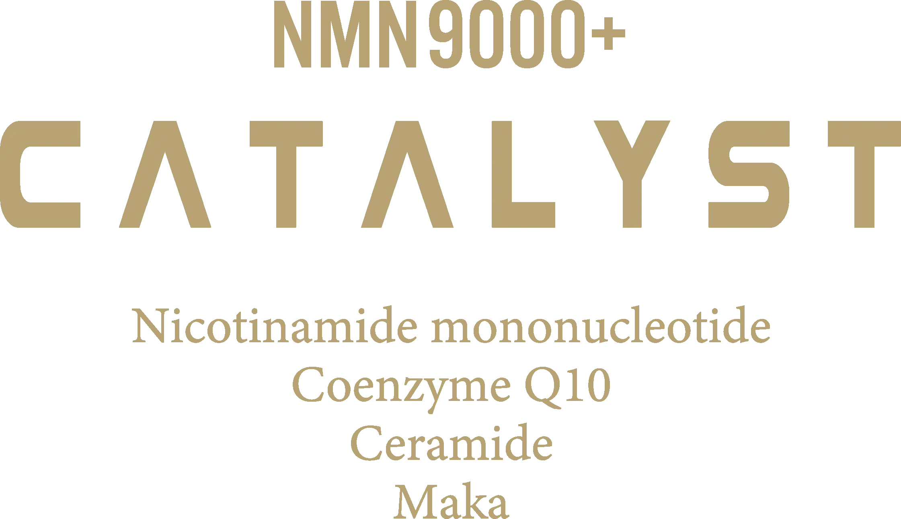
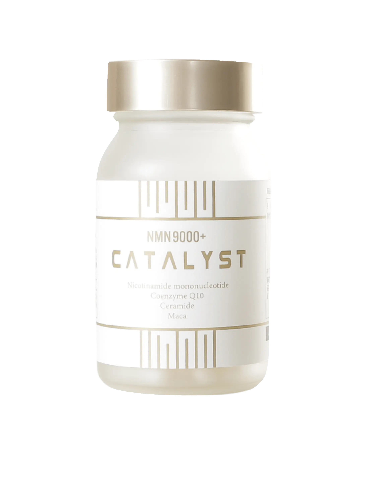
NMN9000+ CATALYST カタリスト
価格39,600円(税込)※一瓶90粒/1ヶ月分目安
純度99%以上・日本製NMN9,000mg配合
加齢とNAD※の関係
※NMNは体内でNADに変化
NADは本来、人間の体内で自然に作られる成分ですが、加齢とともに体内のNAD量は減少します。
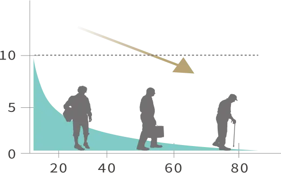
体内のNAD量は、50代で20代の半分にまで減少すると言われています。NADの減少は、代謝の低下や疾患など様々な老化現象に繋がります。解決策は体内のNAD量を増やすことですが、そのためにはNADの前駆体であるNMNを外部から摂取することが有効であると言われています。
NMNが多く含まれる食べ物から摂取できないの？
NMN300mg（本製品1日分の目安量）は
ブロッコリー5,000個／枝豆25,000個に相当

×5,000個

×25,000個
この様に、NMN含有量が多いとされる食品であっても、理想とする量を摂取するには現実的ではありません。
だから！サプリメントでNMNを手軽に摂取
本製品のPOINT
安全安心の日本産原料
NMNは日本国内のGMP認定工場で製造。
もちろん、サプリメント全体の製造も同様です。
JAPAN 日本製
NMNと相乗効果の高い成分を配合
1粒に100mgのNMNNMNを凝縮。
最新のヘルスケア習慣を無理なく日常に取り入れることを重視し、品質・価格・飲みやすさ全てにこだわりました。
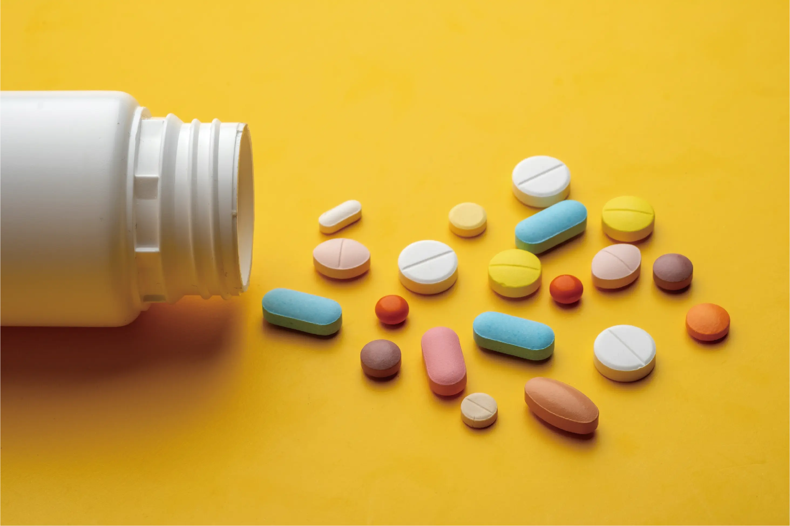
マルチビタミン
エネルギーを作るサポート、
健康な体の維持。
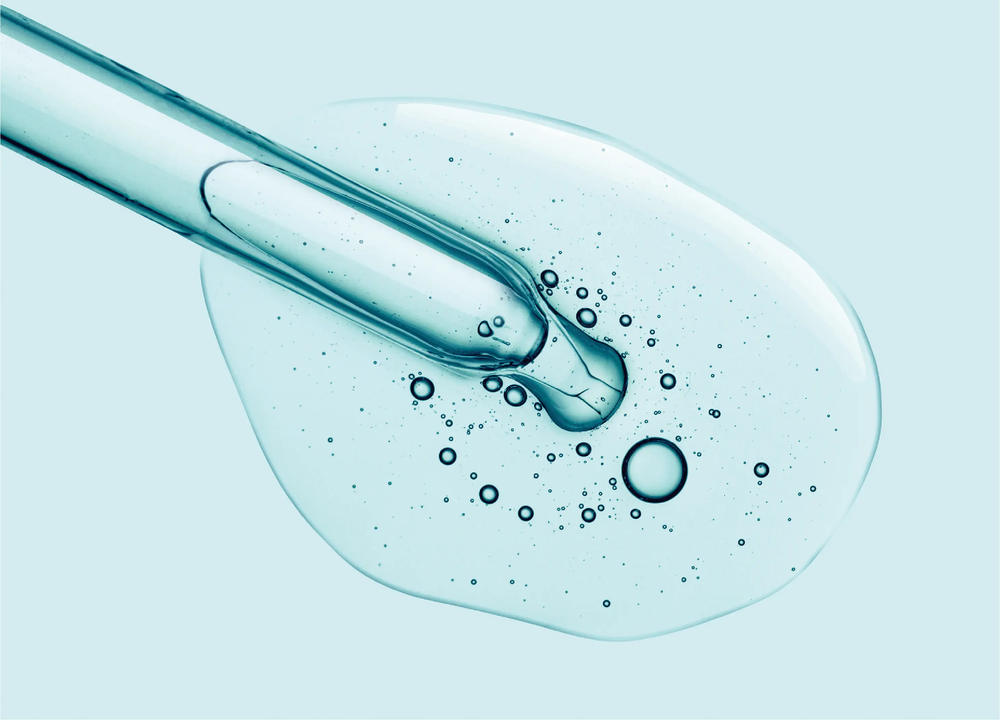
セラミド
乾燥からバリアし、
みずみずしい肌に
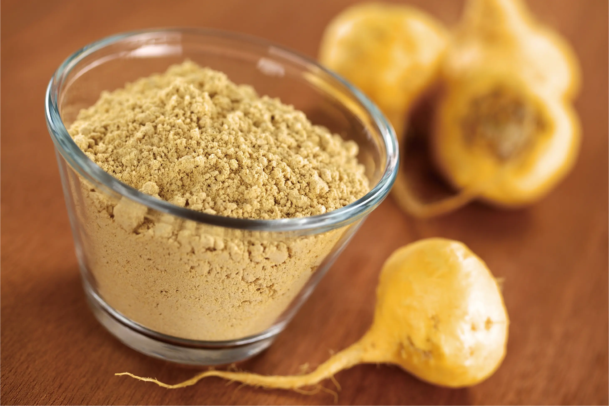
マカ
豊富な栄養素を含み、
滋養強壮・活力をチャージ。
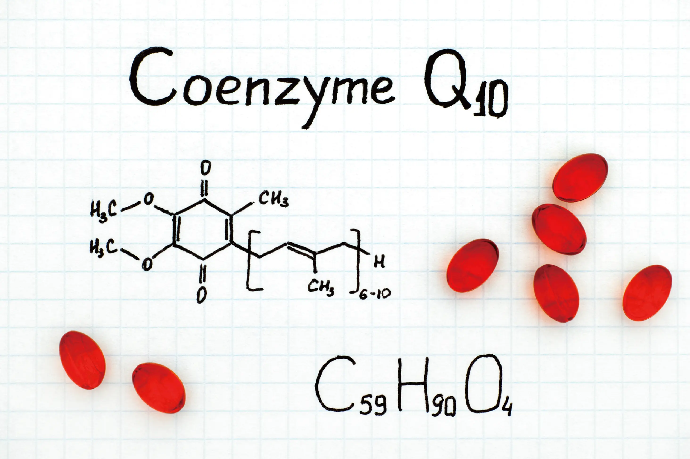
コエンザイムQ10
代謝に重要な物質で、
エネルギー産生やサビにアプローチ
続けやすい価格
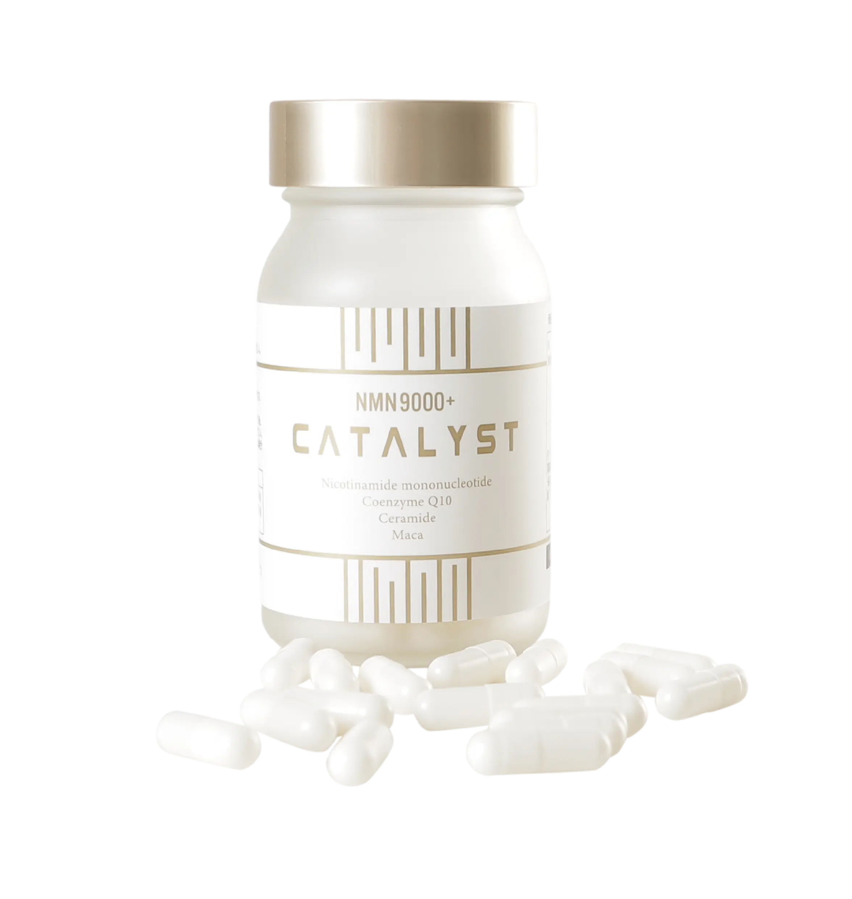
国産にこだわり、質の高いNMN原料を用いた本製品ですが、宣伝広告費などのコストを抑えることで、続けやすい価格を実現しました。
NMNとは
NMNは正式名称を「ニコチンアミド・モノ・ヌクレオチド」と言い、ハーバード大学医学部など世界の研究機関でその効果が発表されています。
NMNは体内でNADという物質に変換され、このNADのレベルを上げることが寿命・老化の抑制に役立つと言われています。
NMN(NAD)の主要な役割

負けない
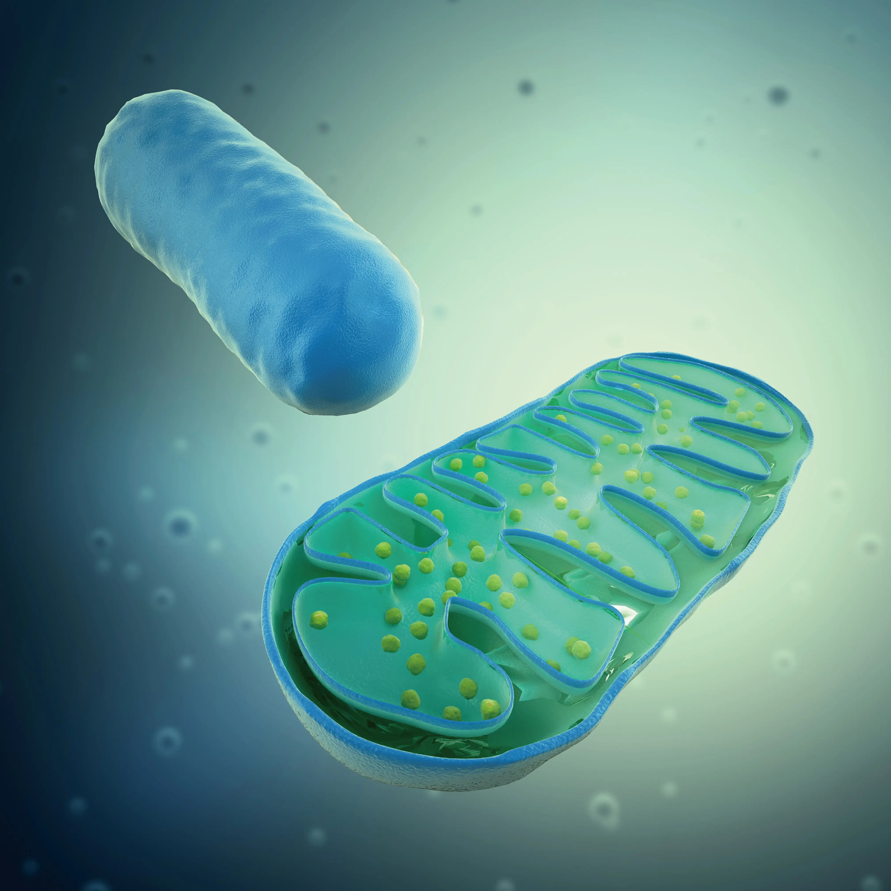
ミトコンドリア
新しい細胞を作り、修復し基礎代謝が上がる
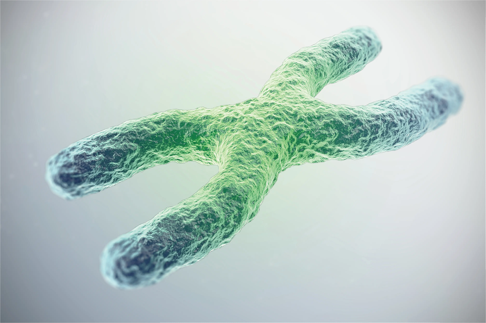
テロメア
新しい細胞分裂を繰り返し、寿命を延ばす。
こんな方におすすめ
- 若々しさを目指したい方
- 睡眠の質を改善したい方
- 内側から美しくなりたい方
- 身体の機能を機能を元気に維持したい方
- 疲れにくい体になりたい方
サプリメントのお召し上がり方
1日3粒を目安に、そのまま水などと共に
お召し上がりください。
<商品名>
NMN9000+ CATALYST
<原材料名>
NMN(国内製造)、デキストリン、コエンザ
イムQ10、セラミド含有こんにゃく芋エキ
ス、マカ粉末／HPMC、決勝セルロース、
ステアリン酸カルシウム、微粒二酸化ケイ
素、V.C、二酸化チタン、抽出V.E、ナイア
シン、パントテン酸カルシウム、V.B6、
V.B2、V.B1、V.A、葉酸、V.D、V.B12
<販売者>
株式会社Catalyst
東京都中央区銀座1-22-11-2F
mail: info@nmn-tokyo.jp
最新のヘルスケア成分で
未来の体を作る